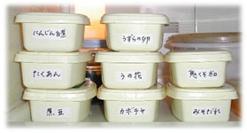
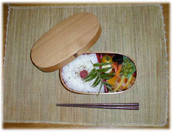

|
■鬼・くそ・ボロ
とにかく忘れっぽい。自分がしたことを、次からつぎへと忘れてしまう。これはちょっと重要だぞと思ったら、このごろすぐ手帳に書くことにしている。まるで事件を調べる刑事か探偵のようだわ、と思いながら鉛筆なめなめ書きつける。
いちばん困るのは、せっかくこしらえた常備菜を片端から忘れていくこと。お弁当にも重宝だし、仕事が混み合ってきたときの晩のごはんの助っ人にもなるので、常備菜はせっせとつくっている。ひじきの煮物、炒りおから、蒸し鶏、茹で豚、砂肝のやわらか煮、甘辛レバー、れんこんの南蛮漬け、たらこピーマン、大根葉のつくだ煮、こんにゃくのピリカララ、もやしやほうれんそうのナムル、煮豆などなど……。常備菜を入れた容器が冷蔵庫のなかに重なっていくと、なんだか安心する。ときどき蓋をとってなかみを覗き、うふふ、なんてひとりで笑うこともある。
ところが、これを使いきれない。一度も蓋をとらないままかびてしまったなんていう、哀しい過去ももっている。常備菜を入れた容器に、なかみを書いたシールを貼るようにしたのは、そんな過去をはじめ、「もったいなかったー」と地団駄踏んでくやしがった懲りない失敗の末だった。「書いて貼る」がどんなにめんどうでも、時間をやりくりしてつ
くったものを駄目にするよりはいいのだ。きょう食べたカレーくらい憶えていられるで しょう、という例外もなしにして、いまでは冷蔵庫に入れるものにはみんな名札をつけている。うちでは、晩ごはんを食べたあと、お茶を飲んだり一口甘いものをつまんだりしてくつろいでいると、誰かが「さ、そろそろ十分働き（じゅっぷんばたらき）しちゃおう」と叫ぶ。「誰か」はたいてい、高校生の長女か中学生の次女。「十分働き」は、その日うちで晩ごはんを食べたひとはみんな参加の、後片付けのことなのだ。これをしないと、母さんが不機嫌になって、それをなだめたり謝ったりするのにどうしたって十分以上かかることを思えば、きっぱり十分間働いちゃいましょう、というのが彼女の胸のうちらしい。そんなことには気づかないふりをして「あなたたち、えらい」とか「ほんとに助かってます」とか言って、おだてている。二歳半の下の娘も、ちいさなからだにエプロンを巻きつけて食器を下げたり、しまえる食器をしまおうとしたりする。大事にしている食器を洗い場に投げこむのを見るにつけても、身がちぢむけれど、全員参加を旨としている以上、「あなたは遊んでていいからね」とは言えない。「十分」きっちり、タイマーをかける。タイ
マーがピピピと鳴るまで脇目もふらず、なんというかちょっとしたゲームみたいな感じで働きに働く。「後片付けを手伝う」というとおおごとだが、自分の時間を十分間差し出すというのは気分的にも楽らしく、宿題が山と出た日も試験中も食器を洗ったり、拭いたりしている。「きょうは食器が多いから十五分働きにしといた方がよさそうじゃない？」などと言うこともある。ま、十五分止まりというところだ。
「十分働き」の話になってしまったが、ある日、この「十分働き」の間に、私は肉のそぼろをつくって容器に収めたのだった。ピピピの前に食器洗いを終え、「八分四十二秒。
やったね」なんて言っているまんなかの子に「これ、シール貼って冷蔵庫にしまって」と頼む。
「なかみはなあに？」
「お肉のそぼろ」
「へーい」
寝る前にひと口冷たいお茶を飲もう、そう思って冷蔵庫をあけると、そこに変なものが入っている。「おに・くそ・ぼろ」と書いてある。
「なにこれ」
容器の蓋をとってなかみを見ると、肉のそぼろだ。そうだ、きょう十分働きのときにまんなかの子に名札を書いてと頼んだあれだ。わざと「おに」、「くそ」、「ぼろ」と間をあけて書いてある。
鬼・くそ・ボロかあ。ときどき私は鬼になるし、「くそっ」と叫びたいし、ボロボロにもなる。なんだかいいなあ、おまじないみたいで。明日のお弁当は、鬼・くそ・ボロの入った三色ごはんにするとしよう。
以来「鬼・くそ・ボロ」は、うちで特別な常備菜になった。心身の疲労、しょんぼりにも効くんである。

■おまけのレシピ
１「鬼・くそ・ボロ」（ひき肉編）
鶏、豚、牛、合挽、どんなひき肉でもおいしくできる。鍋のなかにほんの少し水を入れ、ひき肉を入れる。木杓子でよく炒って、火が通ってきたら砂糖、しょうゆで味をつける。生姜汁を加える。
２「鬼・くそ・ボロ」（牛肉つくだ煮韓国風）
牛肉切り落とし100?、しょうゆ大さじ1.5、砂糖小さじ2、ごま油小さじ2、おろしにんにく少々、ねぎみじん切り適宜
牛肉を細く切って鍋に入れ、調味料を混ぜこんで炒りつける。
３ ほうれんそうのナムル
ほうれんそう200?，塩少々、ごま油小さじ1、おろしにんにく少々、すりごま小さじ1
ほうれんそうを茹で、3?くらいに切る。調味料でよく和える。
※２と３に、にんじん（せん切りにしてさっと茹でる）、えのき茸（茹でる）、しいたけ（せん切りにして炒める）をそれぞれ、塩、こしょう、ごま油、おろしにんにく少々、すりごまで和えたものをごはんにのせれば「ビビンバ」のでき上がり。好みで唐辛子味噌（コチュジャン）をちょんとのせると本格的。スッカラ（韓国で使う匙）でよくよく混ぜて召し上がれ。
４ 砂肝のやわらか煮
とりの砂肝300?、生姜適宜、にんにく1片、しょうゆ大さじ3、酒大さじ4、砂糖大さじ3
砂肝はそぎ切りし、さっと茹でる。
湯をかえてもう一度、今度は弱火で40分ほど茹でる（途中水を加える）。
湯を捨て、水少々と生姜、にんにく、調味料を入れた鍋に砂肝をもどし、30分煮る。
５ たらこピーマン
ピーマンはせん切りにし、火をつける前に鍋に入れる。サラダ油を少々入れて、火をつけて炒めはじめる。
ピーマンが少ししんなりしたら、たらこの皮からなかの卵をしぼり出すように鍋に入れ、炒める（皮は食べちゃうこと）。
たらこが全体にまざったら、でき上がり。味つけ不要。かんたんで、彩りもいい一品。

|